Invalid Prescription
Starfield Side Quest: Guidance, Puzzles, Combat, and Spatial Storytelling
Project Overview
This level is a Starfield side quest that combines puzzles, sniping, stealth, and persuasion. The player arrives on a rocky, barren planet to help local villagers investigate the source of an illness and the disappearance of their doctor, then faces a difficult choice at the end of the story.
Level Layout
The level consists of an outdoor settlement and a two-story interior. The exterior establishes primary and secondary landmarks, quest direction, and danger zones. The first and second interior floors support puzzles, stealth, combat, and narrative information. As the player progresses, the same spaces are repeatedly viewed from different elevations, so the layout simultaneously supports guidance, advance information, and combat reuse.


Goal 1: Guiding the Player
Primary Landmarks, Secondary Landmarks, and Occlusion
I arrange primary landmarks, secondary landmarks, and occluding elements so the player receives different levels of information from different positions. The final destination is not permanently exposed. Instead, changes in player position and building orientation reveal, conceal, or reframe it, allowing the current objective to command attention.

After landing on the planet, the player begins at Position 1 and moves in the direction of Arrow 1. From here, the final exterior destination is visible: a massive concrete arch paired with a weathered stone arch. Buildings on both sides restrict the view and prevent the player from receiving too much irrelevant information at once.
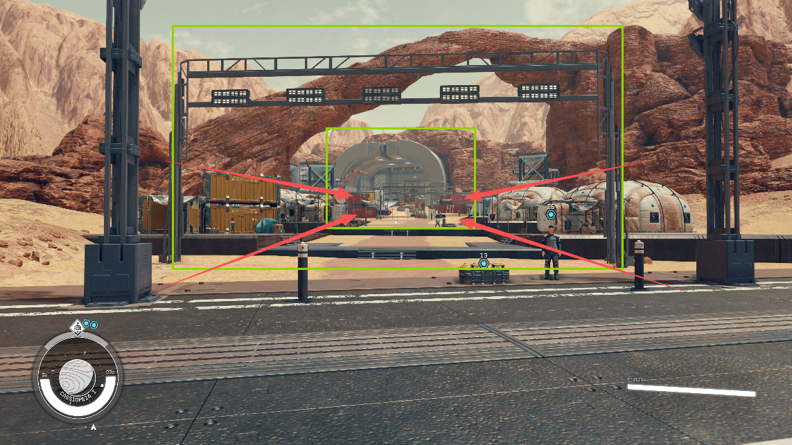
When the player reaches Positions 2 and 3, the orientation of the buildings changes and redirects the player's view. Secondary landmarks that were previously difficult to notice enter the frame, using bright yellow to attract attention.

At Position 3, the arch marking the final destination is temporarily occluded. The red outline in the diagram shows the hidden target. This occlusion refocuses the player's attention on the current task and prevents a distant objective from interfering with an immediate decision.

At Position 4, I use a large vehicle to restrict the view. Its silhouette also creates a leading line that clarifies the next objective.

Communicating Traversability Through Conveyance
Enemy placement and scripted behavior allow the player to judge whether an area is dangerous before entering it. Two heavily armored guards stand in the danger zone, soldiers practice shooting behind them, and another enemy patrols in the distance. Together, these activities communicate that the space ahead is not an ordinary passage, but a combat zone that requires observation and preparation.
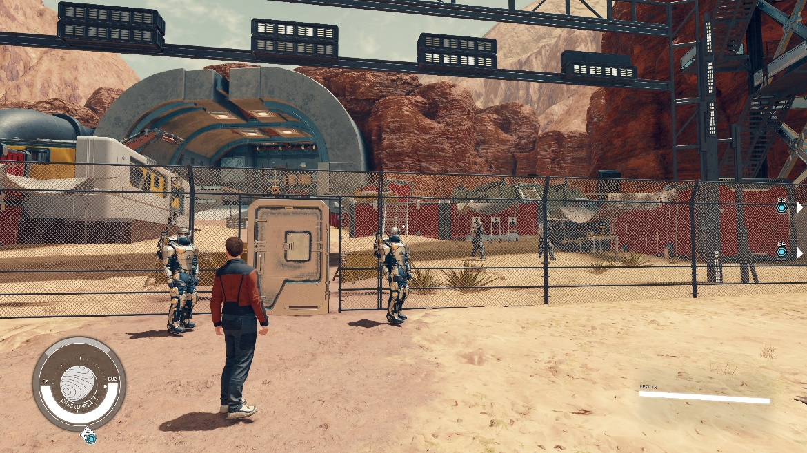
When friendly NPCs occupy an area, the player understands that it is temporarily safe and can be used for conversation or recovery. Safe spaces and combat spaces use different character states and levels of activity, allowing the player to read a change in pacing without relying on text.


Windows and other elements that do not fully block sightlines give the player information in advance. Before entering the combat space, the player can observe enemy positions and prepare either for combat or stealth.

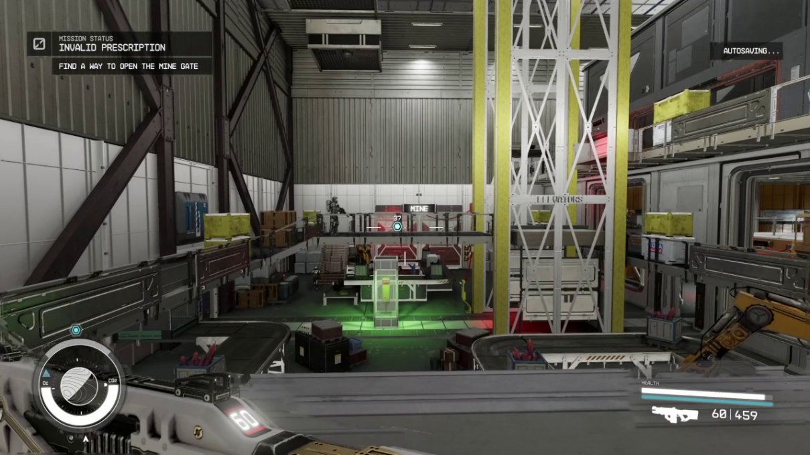
Using Color to Attract Attention and Build Spatial Memory
Areas the player must visit use colors that contrast with their surroundings. In the example below, the destination is white, making it stand out from the environment.
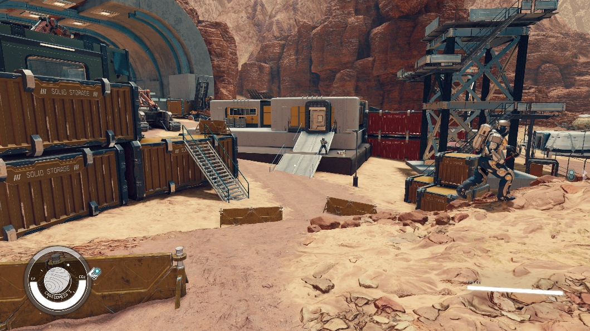
Danger zones use colors associated with danger as a warning. The area surrounded by red shipping containers is very open and has little cover, leaving the player vulnerable to being surrounded. Red therefore communicates both a visual warning and the nature of the space. Interior rooms also use different dominant colors so each leaves a distinct impression and helps the player understand the overall layout.
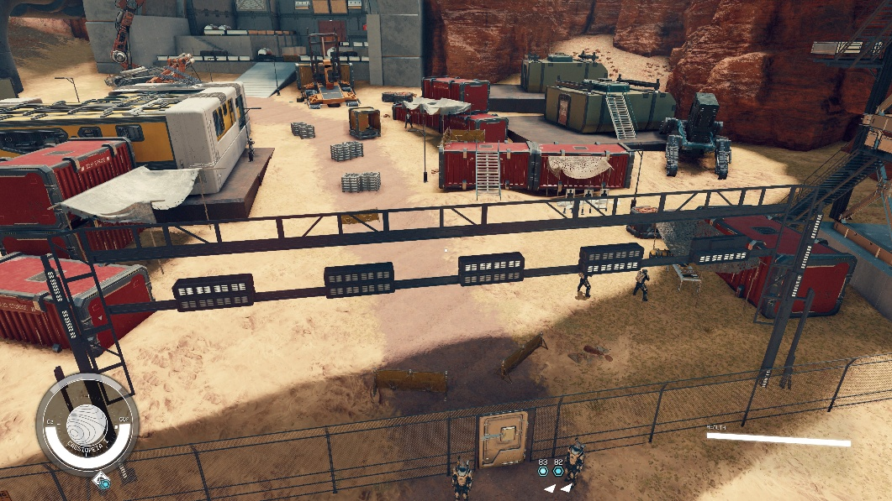
Goal 2: Puzzle Design
Teaching the Core Mechanic
Early in the quest, the player must complete a basic puzzle before progressing. This gate ensures the rule is genuinely understood. The lesson is reinforced immediately and then expanded step by step. In the exterior section, three exercises teach the player to use batteries to open security doors, deepening memory through repeated practice.

Reusing Consistent Conveyance
Wherever a puzzle appears, I use the same red-and-green lighting language. A red light always indicates a locked security door that still needs power; green indicates that the circuit is connected. Repeating the same feedback allows the player to associate color directly with the mechanic's state.


Lights and cables further clarify puzzle information. Lights display the current state, while cables visually connect the power source to its target so the player can trace cause and effect.


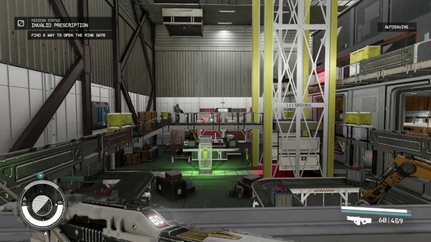
Setting Puzzle Sightlines
When the player exits a room or first enters a new area, the initial facing direction always points toward a battery or puzzle. The battery room may be temporarily inaccessible, but showing it early establishes a spatial memory. When the route opens later, the player already knows where to return.


Goal 3: Creating More Varied Combat
Beginning Each Encounter with a Warm-Up
At the start of each encounter, I place an enemy with their back turned to the player. This gives the player an easy first kill and a chance to learn the current weapon and space before engaging a more complex enemy combination.
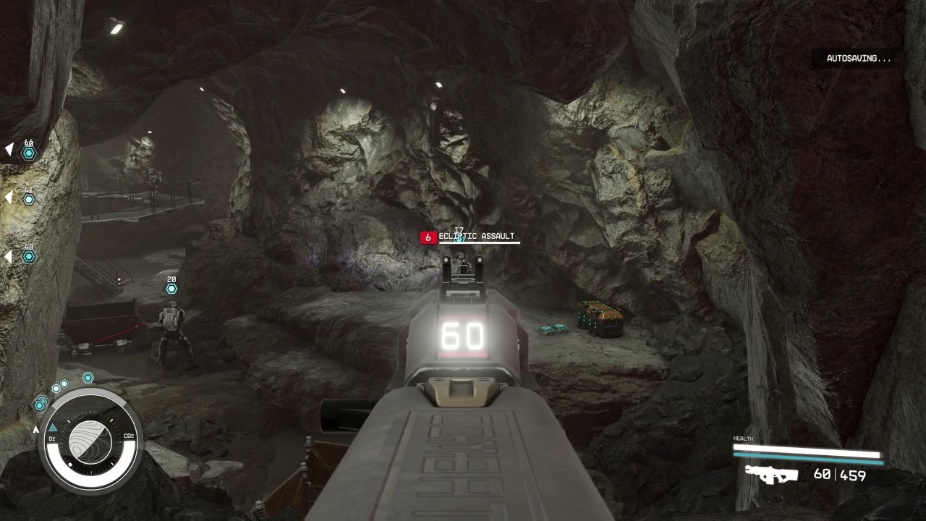
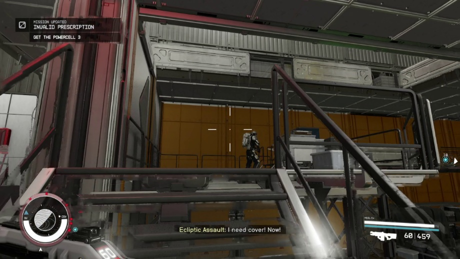
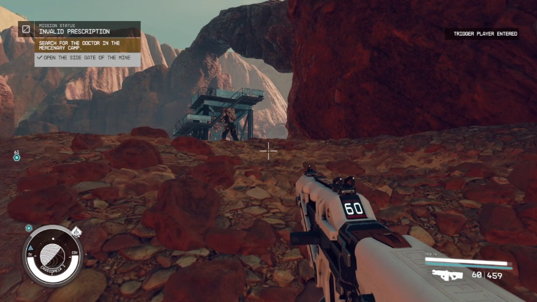
Mixing Enemy Types
Enemy combinations change the player's movement and target priorities. When melee and long-range enemies appear together, the player must create distance while responding to distant lines of fire. When melee and mid-range enemies are combined, the player must switch between cover and targets more frequently within a constrained space.

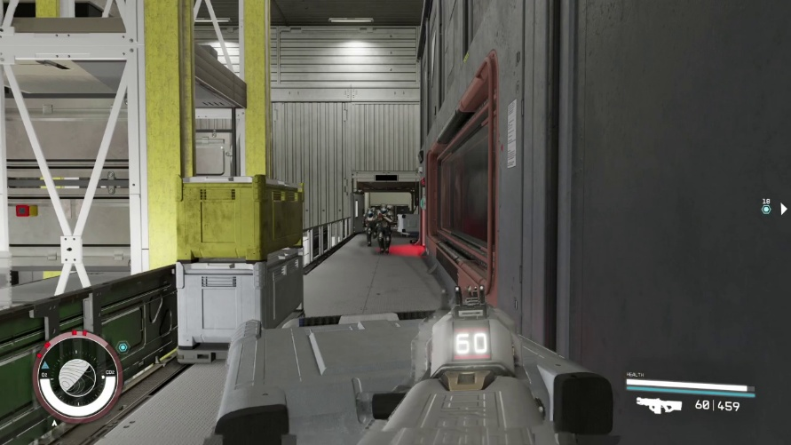
Using Enemy Position to Encourage Weapon Switching
I place some enemies in positions that are difficult to attack with the current weapon, encouraging active weapon switching. Elevated enemies reduce the effectiveness of mid-range weapons. From a high, distant position, a sniper rifle is appropriate; at medium range, the player switches to a rifle; and in close corridor combat, a shotgun becomes the best option. Distance, sightlines, and spatial scale jointly drive each weapon change.


Reusing Different Elevations Within the Same Space
When the player occupies different elevations, enemies spawn above or below them. This reuses the same space while giving the player different combat experiences and information structures within one room.
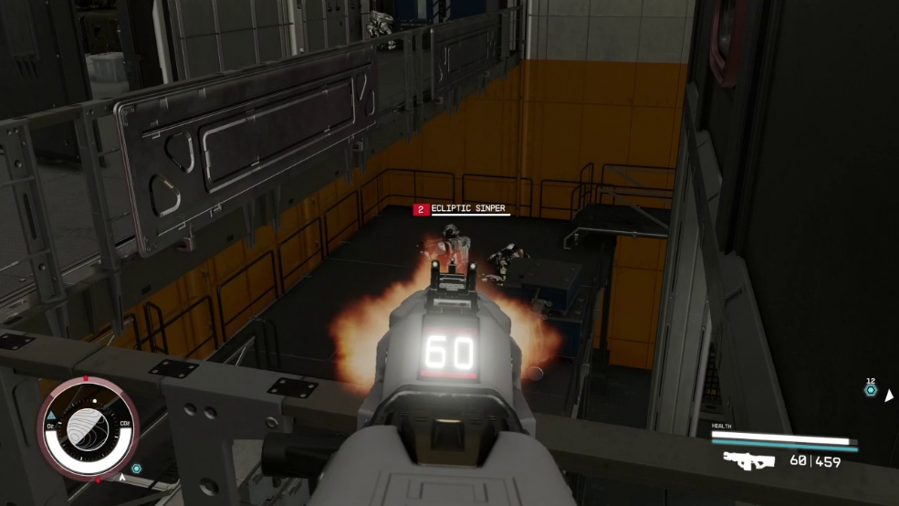
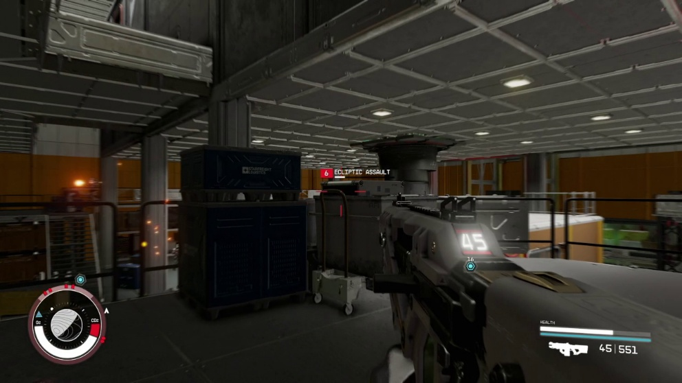
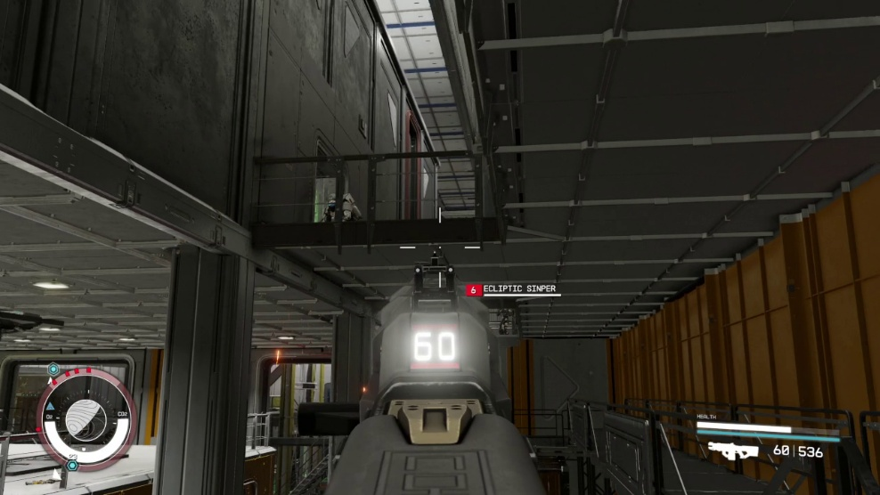
Providing Actionable Information for Stealth
I create enemy patrol routes and reveal that information in advance. This allows the player to observe patrol patterns, choose when to wait, and plan a stealth route instead of reacting only after entering the area.
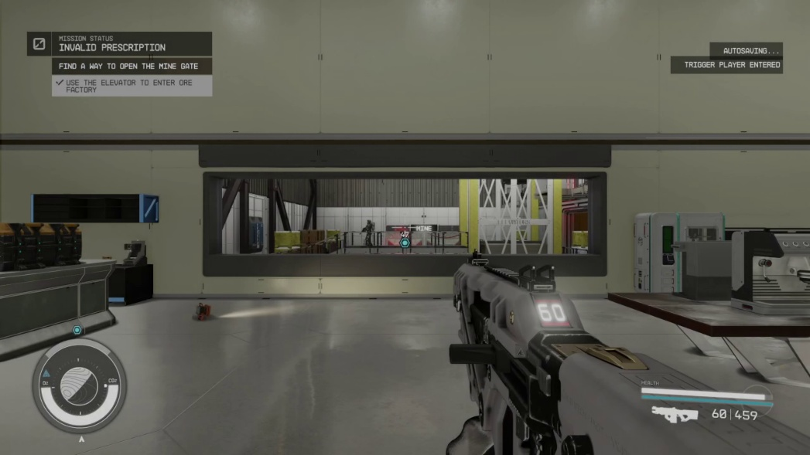
Designing Cover for Specific Enemy Types
Against melee enemies, I use central cover so the player can circle it while fighting. Against elevated ranged enemies, taller cover blocks lines of fire from above. Against larger enemy groups, medium-height cover preserves information while allowing the player to avoid fire temporarily.

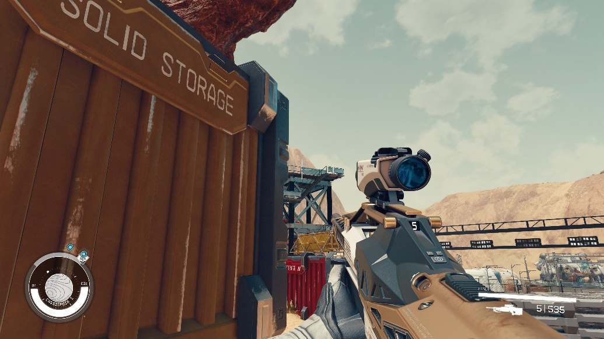
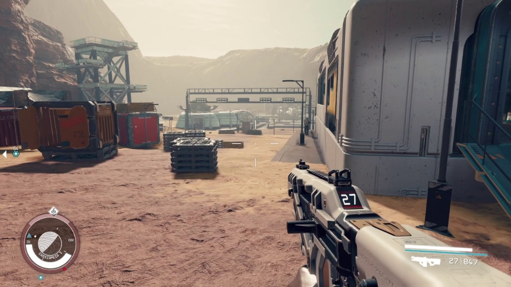
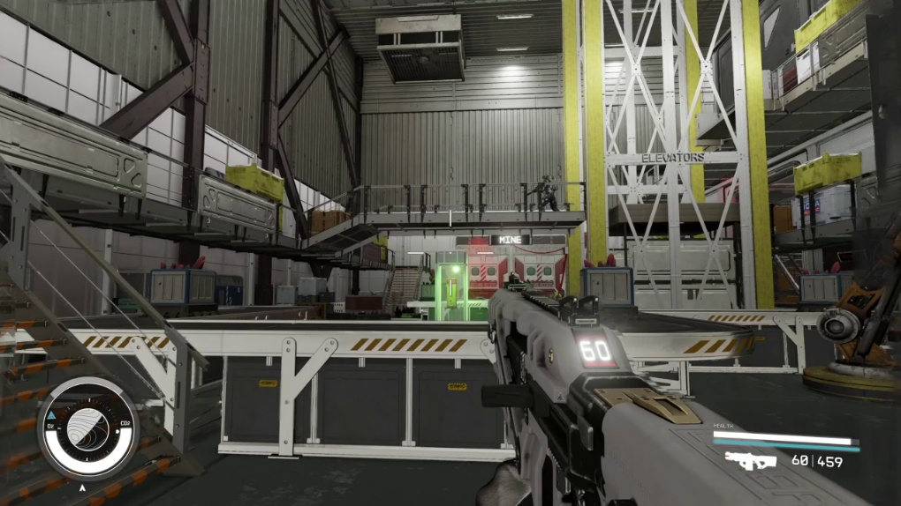
Goal 4: Spatial Storytelling
Object Placement and Environmental Style
The exterior uses weathered rock as its visual foundation, paired with deteriorated homes that reflect both the barren planet and local living conditions. Inside the residences, worn sofas and common mining tools suggest the villagers' daily lives. The mercenary lounge instead contains sofas, playing cards, beer, and other personal objects, using concrete traces of life to distinguish different groups.


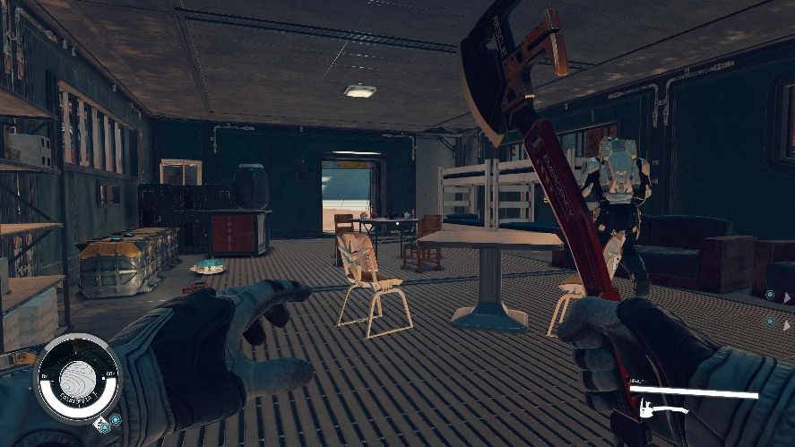
Furniture That Supports Both Combat and Storytelling
The doctor's laboratory contains two melee enemies, so I placed two long tables as cover. They give the player enough room to maneuver around the enemies while remaining appropriate to the laboratory's function.

Inside the factory, numerous conveyor belts function as medium-height cover. The player can crouch behind them to reload and avoid bullets, or jump across them. The conveyors fit the factory's purpose while also creating movement choices during combat.

Enemies occupy elevated watchtowers in the mercenary camp, so tall cover at ground level allows the player to block lines of fire from above. The form of the cover is determined jointly by enemy position and narrative function.

Using Lighting, Post-Processing, and Volumetric Fog to Shape Atmosphere
Volumetric fog and lighting create an oppressive, murky working environment in the mine. After completing the level, the player leaves beneath a rising sun. The image suggests that the town may be entering a new beginning—or that nothing has changed—echoing the difficult choice at the end of the story.
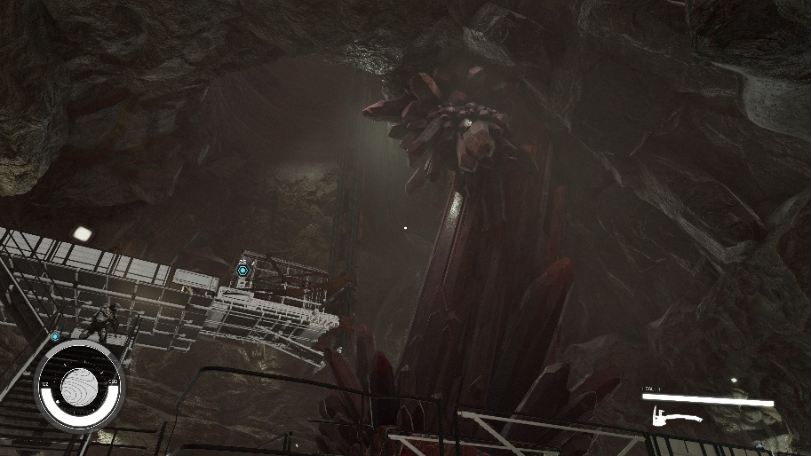

Goal 5: Resource Management and Pacing
Both the interior and exterior alternate breathing spaces with combat spaces, using spatial type to control encounter pacing. Red represents combat space in the diagrams below, while green represents breathing space. After a high-intensity encounter, the player has an opportunity to observe, converse, recover, and replan before entering the next fight.

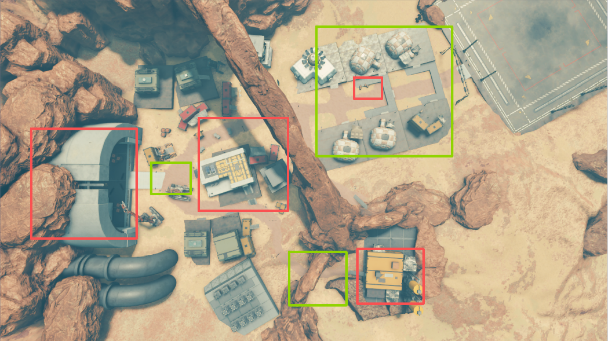
Level Gallery
Final in-game views are shown below. Click an image to view the full-size version.